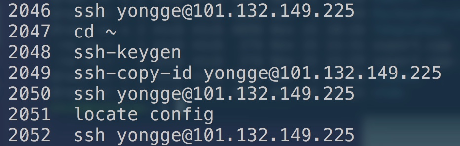

远程登录 ssh yongge@101.132.149.225
服务器钥匙: ssh-keygen -R 101.132.149.225

ssh-keygen 产生秘钥
cd ~/.ssh 查看密钥所在目录，id_rsa为私钥
cd ~/.ssh Server： 查看密钥所在目录，本地公钥进这里
ssh root@ip地址 远程登录
exit 退出登录
logout 退出登录命令
scp -r root@ip地址:dir localFile 下载文件
scp -r localFile root@ip地址:dir 上传文件
rsync -r路径 dir 1.1.1.1: 远程同步：本地目录到远程
rsync -r路径 1.1.1.1:dir/ 远程同步：远程目录到本地
rsync -r路径 —delete删本地 dir/ 1.1.1.1:dir/ 远程同步：本地目录内容到远程目录下
reboot 重启，相对安全
runlevel 查看init级别
w 查看系统状态
service/network/restart 重启服务器
shutdown -r 6:00 pm & 重启“慎用”
shutdown -h 关机“慎用”
shutdown -c now 取消前一个关机命令
ifup 网卡设备名 启用网卡
ifdown 网卡设备名 关闭网卡
ifconfig 查看ip地址
nslookup 域名 列出：域名对应的ip
ping -c次数 ip地址或域名 查看网络通畅程度
netstat -a所有 列出：所有网络服务信息
netstat -t TCP 列出：TCP端口
netstat -u UDP 列出：UDP端口
netstat -n 不适用域名服务名，适用ip和端口
netstat -l监听状态 列出：仅在监听状态的网络服务
netstat -r 列出：可以看到网关
telnet ip地址或域名 端口 远程管理与端口查看命令（慎用）
traceroute ip地址或域名 端口 查看网络路径
tcpdump -i eth0 -nnX port 21 抓包，能得到用户访问的信息